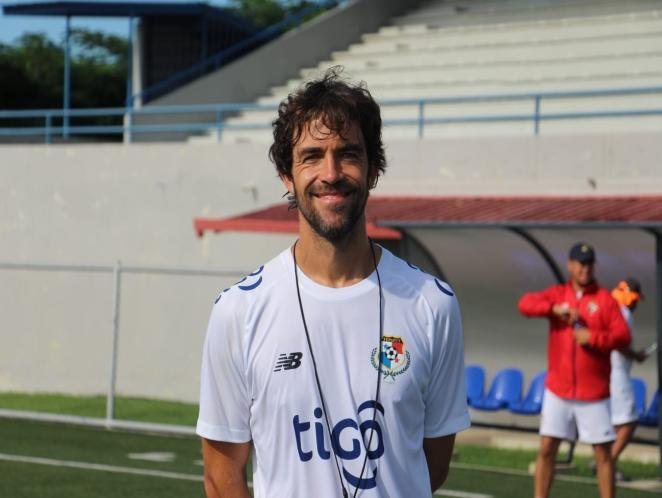
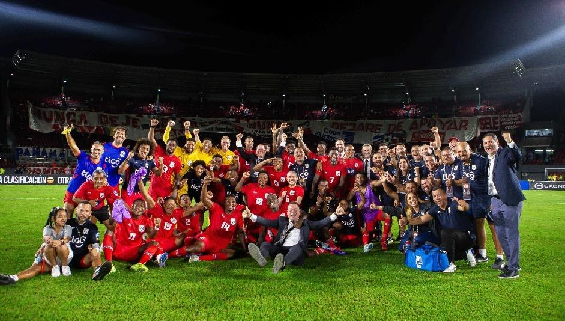
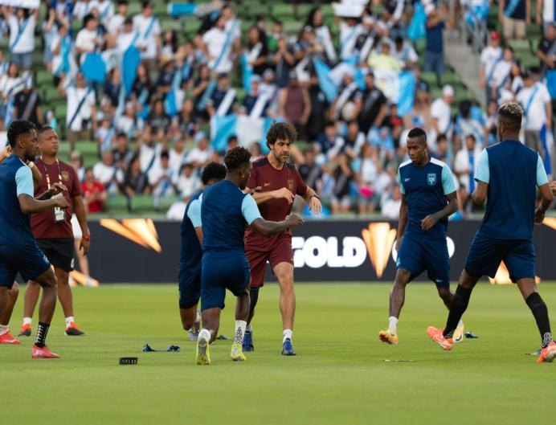

Rendimiento físico · Fútbol profesional
Christian Beguer BaigorriPreparador físico, entrenador UEFA Pro y analista de rendimiento. Seis años en la Selección de Panamá, de la final de la Copa Oro a la clasificación para el Mundial 2026.

Trayectoria
Experiencia en el fútbol profesional
Pulsa (o toca) cada etapa para ver el detalle.
Etapas anteriores (2005–2015)
Logros
Resultados que avalan el trabajo


Sobre mí
Del fútbol base al Mundial
Soy preparador físico desde 2007, siempre ligado al fútbol, y he pasado por todas las categorías: desde el fútbol base hasta el fútbol profesional y las selecciones nacionales.
Estoy especializado en la planificación y organización del entrenamiento, el control de carga con GPS, la optimización del rendimiento, la prevención de lesiones y el análisis de rendimiento como sport scientist. Además tengo la Licencia UEFA Pro, que me permite entender el entrenamiento desde la mirada del primer entrenador.
Otras titulaciones y cargos
Herramientas
Mi metodología
Primero el fútbol: lo físico vive dentro del juego.
Documentos y estudios
Charlas y docencia
Compartir conocimiento con entrenadores
Profesor en los cursos de Entrenador de Fútbol Nivel 1, 2 y 3 (preparación física, técnica y entrenamiento deportivo) y ponente para federaciones y centros de formación.
Contacto
Hablemos
Para clubes, federaciones y cuerpos técnicos.
- Responsable de rendimiento / preparador físico para clubes y selecciones
- Proyectos de control de carga y análisis de rendimiento
- Clinics y formaciones para entrenadores